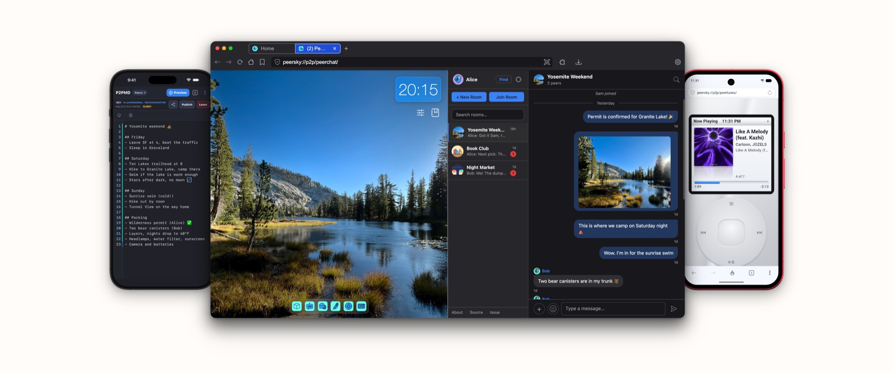

Have you ever wondered what it would be like if the internet wasn't controlled by a handful of big companies? That's what the distributed web, or DWeb, is all about. It’s a return to the internet’s original spirit, operating on a network of computers where everyone shares and collaborates. This way, no single entity can control or shut it down. It's like turning the entire web into a giant global community project.
PeerSky is your personal gatekeeper to a new way of accessing web content, on your computer and on your phone. Imagine a world where you can access web pages, communicate securely, and store or share files directly from a global network of peers, without relying on centralized servers. With PeerSky, this vision becomes a reality.
It works by leveraging multiple protocols like IPFS, Hypercore, and BitTorrent.
PeerSky also includes a set of built-in peer-to-peer applications available under
peersky://p2p/.
These apps demonstrate how tools can run locally while publishing directly to the distributed web.
Examples include Hyper-based messaging with
peersky://p2p/peerchat,
collaborative markdown editing and presentations with
peersky://p2p/p2pmd,
a music player for your own library with
peersky://p2p/peertunes,
chatting with local AI models via
peersky://p2p/ai-chat,
decentralized file sharing using
peersky://p2p/hyperdrive,
and many others.
Devices on the same Wi-Fi find each other directly through our hyperdht mDNS discovery, so chats, notes and files keep moving
when the internet is down. Files can be shared openly or kept in a private drive, encrypted so only your own
devices can open them.
As PeerSky continues to grow, new protocols such as Veilid, along with additional P2P apps, will be
added, further expanding its capabilities and appeal.
PeerSky also includes local LLM support. Instead of routing your prompts through cloud providers or surveillance-based “AI browsers,” PeerSky lets apps talk to models running directly on your own device. This means you can generate code, text, or metadata privately, offline, and publish it straight to the distributed web from your P2P apps. The AI lives in your browser and on your hardware, not in a surveillance platform.
PeerSky is designed for everyone, making it easy for users owners to explore the web while enhancing
privacy and digital
autonomy—without relying on traditional internet infrastructure.
✨ Features
The full lists live in the docs for desktop and mobile.
💻 macOS, Windows and Linux
-
Basic browser navigation:
- ✅ Back
- ✅ Forward
- ✅ Reload
- ✅ Browser protocol (
peersky://) - ✅ Home page (
peersky://home) - ✅ Cross browser theming (
browser://theme/) -
✅ Search engine
- DuckDuckGo (default)
- Brave Search
- Ecosia
- Kagi
- Startpage
- ✅ Page zoom, per tab, with a percentage readout
- ✅ Address bar suggestions drawn from browsing history
- ✅ Downloads, with progress in the toolbar (
peersky://downloads)- Pause, resume or cancel a download in progress
- ✅ Browsing history (
peersky://history), searchable - ✅ First-run onboarding (
peersky://onboarding) - ✅ Tabs
- Vertical tabs toggle
- Tab groups, with colours and collapsing
- Pinned tabs
- Split view: two tabs side by side, with a draggable divider
- Drag a tab onto another window, or out into one of its own
- Preview card on hover
- Memory saver: sleeps inactive tabs, with an exclusion list
- ✅ Incognito windows (Cmd/Ctrl+Shift+N)
- No history, saved tabs, download records or AI memory
- Cookies, cache and site permissions live in memory and go when the last incognito window closes
- Extensions stay out, and sites cannot publish to your drives from one
hyper://andipfs://content still goes through the same local nodes
-
Hypercore protocol handler:
- ✅ Run a local hyper node
- ✅
hyper://native URLs support
-
BitTorrent protocol handler:
- ✅ WebTorrent in isolated child process
- ✅
bittorrent:///bt:///magnet:native URLs support - ✅ Real-time download progress UI with pause/resume
- ✅ Auto-destroy torrent on completion (no seeding)
- ✅ Optional
bt://seeding
-
IPFS protocol handler:
- ✅ Run a local Helia node
- ✅
ipfs:///ipns://native URLs support - ✅ Directory listings support
-
✅ Native ENS domain resolution:
- Resolve
.ethdomains directly to IPFS/IPNS content without centralized gateways (e.g.,ipfs://vitalik.eth). - Local caching for resolved ENS content to enhance performance and reduce RPC calls.
- Resolve
-
Holesail protocol handler:
- ✅
hs://native URLs support - ✅ Direct peer-to-peer connections for real-time apps, over Holesail
- ✅
-
Local
file://browsing with P2P publishing:- ✅ Custom
file://support with privileged access - ✅ Directory listings (Chrome-style)
-
✅ One-click P2P publishing to:
- IPFS (
ipfs://) - Hypercore (
hyper://)
- IPFS (
- ✅ Custom
-
Web3 protocol handler:
-
✅ Run a local web3
protocol node
- Access on-chain websites.
- Fetch data from smart contracts using auto, manual, and resource request resolve modes.
- Query account balances or other data directly from smart contracts.
-
✅ Run a local web3
protocol node
-
P2P applications:
- ✅
peersky://p2p/peerchat/- Peer-to-peer messaging over Hyper
- Works over the local network with no internet, via our hyperdht mDNS discovery
- ✅
peersky://p2p/p2pmd/- Real-time collaborative markdown editor
- Presentation slides mode with speaker notes
- Offline KaTeX math mode with inline scientific templates
- IEEE-style two-column research paper preview/export
- AI-powered content generation
- Publish to IPFS/Hypercore
- Peers dashboard with roles, live editing status, and edit history
- ✅
peersky://p2p/peertunes/- Music player
- Syncs songs from
hyper://drives or local folders, with tags and album art
- ✅
peersky://p2p/ai-chat/- Chat with local AI models, with nothing leaving the device
- ✅
peersky://p2p/hyperdrive/- Decentralized file storage, published as a public or private drive
- ✅ And several others, including a website builder, a Wikipedia reader over IPFS, and the Social Reader ActivityPub client for the fediverse.
- ✅
-
Electron’s auto-updater:
- ✅ Download and install the latest release from GitHub automatically
-
Context menu:
- ✅ Back / Forward
- ✅ Reload
- ✅ Inspect
- ✅ Undo / Redo
- ✅ Cut / Copy / Paste
- ✅ Copy Link Address
- ✅ Open Link in New Tab
-
Find in page:
- ✅ Search for text within a document or web page
-
Window state persistence:
- ✅ Save and restore open windows on app launch
-
Keyboard shortcuts:
- ✅ See the full list below
-
Settings (
peersky://settings):- ✅ Switch search engines, or point at a custom search URL
- ✅ Set custom home page wallpapers
- ✅ Hide/show the home page clock, and choose its format
- ✅ Change themes
- ✅ Clear browser cache
- ✅ Vertical tabs, and whether they stay expanded
- ✅ Memory saver, with an exclusion list
- ✅ Automatic updates, plus a manual check
- ✅ Set PeerSky as the default browser
- ✅ About: version and release notes
-
Local LLM integration for P2P apps:
- ✅
window.llmAPIs (chat + streaming, complete) - ✅ Trusted-domain exposure (PeerSky-native + allowlist)
- ✅ AI Chat app (
peersky://p2p/ai-chat/), ported from Agregore examples with PeerSky updates - ✅ P2P Editor integration (
peersky://p2p/peerpad/), with a new AI generator to generate code with AI -
✅ LLM Memory
- Stores prompts and responses across P2P apps
- Reusable History component (P2P editor, AI chat, etc.)
- Settings toggle to enable/disable memory
- “Reset P2P Data” also clears the stored memory
- ✅
-
Web extensions:
- ✅ Ability to add and manage extensions, from the Chrome Web Store or a file
- ✅ Default extensions
-
Bookmarks (
peersky://bookmarks):- ✅ Option to add favourite pages in the nav bar
-
QR code generator:
- ✅ Option to generate a QR code for any page, from the address bar
-
Archive (
peersky://archive):- ✅ List and showcase published content from
peersky://p2p/apps for enhanced discoverability. - ✅ Provide metadata (e.g., creation date, content type) to improve navigation and usability.
- ✅ Ability to download all the hashes of published data in a .json file.
- ✅ List and showcase published content from
-
Backup & Restore (
peersky://backup):- ✅ Create offline
.zipbackups containing tabs, window layout, ENS cache, and full IPFS/Hypercore data - ✅ Upload backups to IPFS or Hypercore to share and restore via a P2P CID
- When restoring a backup from a P2P CID, the original device (or another peer) must remain online to serve the data
- ✅ Create offline
📱 iPhone and Android
-
Browsing:
- ✅ Back, forward and reload, from the bar at the bottom
- Swipe in from the left edge to go back and from the right edge to go forward
- Pull down at the top of a page to reload it
- ✅ Address bar at the top or the bottom, showing the site or the full address
- A line along it fills as a page loads
- Suggestions from your history, the site first and the most used first
- Search suggestions from your search engine as you type, with an arrow to keep typing from one, never in incognito tabs or for addresses
- A button after reload that you choose: Share (default), Add Bookmark, Add Favourite, Reader View, Send to Your Devices, Zoom, Desktop View, Print, New Tab or none
- ✅ Search engine
- DuckDuckGo (default)
- DuckDuckGo without AI
- Startpage
- Ecosia
- Kagi
- Your own engine, from a search address
- The other engines a tap away, for one search
- ✅ Tabs
- Tabs come back after a restart
- Recently closed tabs, and Undo after closing one
- Tabs not opened for two weeks fold into an Inactive tabs group
- Pick several tabs to copy their links, share them or close them
- Press and hold a tab to drag it to another place
- Five live pages at once, the rest kept asleep until opened
- ✅ Incognito tabs
- No history, no saved tab, no tab preview on disk and no cache
- Cookies and site data kept apart from normal tabs and gone when the last incognito tab closes
- Links opened from one stay incognito
- Sites cannot publish to your drives from one
- ✅ Bookmarks, in folders one level deep, with Undo after removing one
- ✅ Favourites on the home screen
- ✅ History, and clearing it
- ✅ Downloads, with progress, pause and resume
- A download a page starts asks first
- ✅ Reader View: a page's article on its own, in one column, at a text size you pick, with nothing from the page running
- ✅ Page zoom per tab, website text size, and pinch zoom on sites that block it
- ✅ Desktop view, printing and sharing a page
- ✅ Send to Your Devices: puts the page in your PeerChat chat with yourself, for your desktop or another phone
- ✅ Press and hold a link, a picture or a video: open it in a new or background tab, preview it, download it, copy or share it
- ✅ Burn Tabs and Data: closes every tab and clears history and cached data in one press
- ✅ Dark websites, for sites with no dark theme of their own
- ✅ Sites ask before they get the camera, the microphone or the location, with their own address in the question
- ✅ Android
- PeerSky as the default browser
- PeerSky in the share sheet: a link shared from another app opens in it
- Add to Home Screen, which puts a page on the home screen with its own icon
- ✅ iPhone
- Home screen widgets: PeerSky, with search, the P2P apps and your bookmarks, and PeerTunes, with what is playing
- Quick actions on the app icon: Paste and Go, New Tab, New Incognito Tab and App Icon
- ✅ Back, forward and reload, from the bar at the bottom
-
Customization (Settings > Appearance):
- ✅ Theme: system default, light or dark
- ✅ App icon in six colours
- ✅ The button in the middle of the bottom bar: Burn Tabs and Data (default), Add Bookmark, Add Favourite, Bookmarks, Downloads, History, Home, New Incognito Tab, New Tab, Settings, Share or Zoom
- ✅ The button after reload in the address bar, as above
-
Ads and trackers blocked inside the browser engine:
- ✅ EasyList and EasyPrivacy, kept up to date
- ✅ YouTube ads blocked, and a switch to turn that off
- ✅ A copy of the lists ships with the app, so blocking works from the first launch, offline too
- ✅ A link to test the browser's protection
-
Hypercore protocol:
- ✅
hyper://pages, with their images, scripts and media - ✅
hyper://sites with domain names, such ashyper://agregore.mauve.moe/ - ✅ Pages on
hyper://andhttps://can usefetch()andXMLHttpRequestwithhyper://, as on desktop- Publishing from a site asks first, and the answer can be changed in Settings > Permissions
- A page's drives are its own, and it cannot read your private drives
- ✅
peersky://p2plists thehyper://sites this phone has opened, with a search, so they open offline too - ✅ Devices on the same Wi-Fi find each other directly, so it keeps working with the internet down
- ✅
-
Hyperdrive (
peersky://p2p/hyperdrive/):- ✅ Upload files or a folder, as:
- Public: anyone with the link can open it
- Private: encrypted, so only your own devices can open it
- This device only: never leaves the phone
- ✅ Copy or share the link of what you uploaded
- ✅ Fetch a
hyper://address, pasted or scanned from a QR code - ✅ Browse a drive's folders and open its files
- ✅ Keep a folder offline, with pause, resume and progress, and an option to download only on Wi-Fi
- ✅ Recent, with what you uploaded and fetched
- ✅ From your devices: private files from your other devices show up here on their own, and this phone's show up there, with a copy kept on your desktop
- ✅ Upload files or a folder, as:
-
P2PMD (
peersky://p2p/p2pmd/):- ✅ Notes you write together, live, over a Holesail tunnel
- ✅ Markdown preview, slides, math with KaTeX, and a two-column research paper preview
- ✅ Templates for a research paper or a technical document
- ✅ Publish a note to
hyper:// - ✅ The people in a note, who is editing, who wrote each line, and recent edits
- ✅ Up to 100 people in a note
- ✅ Recent notes, with a copy kept of each note the phone hosts, so it opens again with nobody else online
-
PeerChat (
peersky://p2p/peerchat/):- ✅ Group rooms and direct messages, with no account and no server
- ✅ Every message is encrypted and signed by whoever wrote it, and passed on from device to device
- ✅ Rooms and direct messages made on 0.1.2 or later change their key every hour
- ✅ Replies, reactions, mentions and search
- ✅ Files and pictures, encrypted with the room, and link previews
- ✅ Message requests to accept or decline
- ✅ Invite links and QR codes, and invites sent through any app
- ✅ A profile with a name, a bio, a picture and a short ID
- ✅ Pinned and muted chats, unread counts and mention bubbles
- ✅ Online and away dots
- ✅ Notifications and sounds
- ✅ Moderation
- Whoever made a room can remove anyone from it, and the removal reaches everyone in the room
- Block or report anyone, from a message or their profile
- Groups hold back threats, slurs and adult links, and refuse explicit pictures before they are sent
- ✅ Works on the same Wi-Fi with no internet
- ✅ The same profile and rooms on your phone and desktops, each device named after you
- ✅ A chat per browser tab
-
PeerTunes (
peersky://p2p/peertunes/):- ✅ The click-wheel music player, for music from
hyper://drives,https://links and files on the phone - ✅ Plays in the background, with the track, artist and artwork on the lock screen
- ✅ Shows when the sound goes to Bluetooth
- ✅ Plays from drives on the same Wi-Fi with no internet
- ✅ The click-wheel music player, for music from
-
Link Device and backups (Settings > Link Device):
- ✅ My devices: your desktops and phones, shown as Desktop or Phone, online or when last seen
- ✅ Move everything to a new phone, device to device
- ✅ Bring private drives, notes, chats, tabs and bookmarks over from PeerSky Desktop, and send tabs, bookmarks, notes and chats to it
- ✅ A backup file locked with a passphrase, to keep wherever you like
- ✅ Remove your data from a phone you are handing on
- ✅ PeerSky data stays out of iCloud, Google and computer backups, which would copy its keys to another phone
-
Your data stays on your devices:
- ✅ Settings > P2P Data
- P2P sites you opened, and data per app, to see what is there and remove it
- Offline folders, to pause, resume or remove
- The Hyper archive: everything you published, with a search
- Downloaded cache, and all P2P data
- ✅ Settings > Data Clearing
- Cookies and site data, listed site by site, to remove one or all
- Cached website data, or tabs and cached data together
- ✅ Settings > Permissions: camera, microphone and location per site, notifications, local network, links to other apps, and publishing from sites
- ✅ Nearby devices, from the home screen: the devices found on the same Wi-Fi, and what to change when none show up
- ✅ Nothing collected: no analytics, no accounts, and QR codes read on the phone
- ✅ Settings > P2P Data
🚧 Coming next
- A global peer-to-peer AI computer: an AI mesh where devices split a large model between them and run it together, instead of renting a cloud
- Local private LLM search
- Web Monetization
- Translations for the whole app
- PeerChat
- Blind peers for messages, with notifications on iPhone when PeerSky is closed
- Voice and video calls
- P2PMD
- Blind peers, so notes stay up without their host
⌨️ Keyboard Shortcuts
On desktop. Cmd on macOS, Ctrl on Windows and Linux.
| Action | Shortcut |
|---|---|
| New Window | Cmd/Ctrl+N |
| New Incognito Window | Cmd/Ctrl+Shift+N |
| New Tab | Cmd/Ctrl+T |
| Close Tab, or the window on its last tab | Cmd/Ctrl+W |
| Close Tab | Cmd/Ctrl+Shift+W |
| Next Tab |
Cmd+Option+Right (macOS) Ctrl+Tab (Windows/Linux) |
| Previous Tab |
Cmd+Option+Left (macOS) Ctrl+Shift+Tab (Windows/Linux) |
| Back | Cmd/Ctrl+[ |
| Forward | Cmd/Ctrl+] |
| Reload | Cmd/Ctrl+R |
| Focus URL Bar | Cmd/Ctrl+L |
| Find in Page | Cmd/Ctrl+F |
| Zoom In | Cmd/Ctrl+Plus or Cmd/Ctrl+= |
| Zoom Out | Cmd/Ctrl+- |
| Actual Size | Cmd/Ctrl+0 |
| Print Page | Cmd/Ctrl+P |
| Open Dev Tools | Cmd/Ctrl+Shift+I |
| Minimize | Cmd/Ctrl+M |
| Toggle Full Screen | F11 |
❓ FAQ
What is PeerSky?
PeerSky is a gateway to the peer-to-peer web, not just a browser. It turns your computer or phone into a node (a server for the network), so pages, files, chats and notes can come from the people who have them rather than from one company’s server. The everyday web works as usual, and alongside it PeerSky carries a full ecosystem of apps built on the same idea: chat, shared notes, file sharing, a music player and, on desktop, a local AI.
What does peer to peer mean?
Your device talks to other people’s devices directly instead of going through a company’s computers. With no server keeping everyone’s data, there is nothing to hack, leak, sell or switch off. The one catch: the device that has what you want, a page, a file or a message, needs to be online for it to reach you.
Does it work without the internet?
Between devices on the same Wi-Fi, yes. They find each other and talk directly, so there is nothing out on the internet to reach. Any local network will do, even a phone’s hotspot with no data behind it: during an internet shutdown, in a power cut, at a festival, or wherever the internet is down or blocked. Some public Wi-Fi keeps devices apart, and there a hotspot works instead. Regular websites still need the internet.
Can I use it as my everyday browser?
Yes. Regular http and https websites work as in any other browser: search, logins, videos, downloads, bookmarks and tabs. The peer-to-peer web sits right alongside them.
Is it free? Do I need an account?
It is free and open source, with no ads and no subscriptions. There is no account to make: open it and start browsing.
Does it block ads and trackers?
Yes, on every site. The desktop app comes with uBlock Origin, and the phone apps block ads and trackers inside the browser engine from the first launch.
Who is this for?
Anyone who wants the web on their own terms:
- Everyday users who want to browse without ads or tracking, and use the peer-to-peer web.
- Journalists and activists who need to share files and talk with no company in the middle.
- Underrepresented communities building their own spaces online, which no platform can take down.
- People living through internet shutdowns, or with slow or censored connections, who still need to reach each other on a local network.
- Friends, families and teams who chat and write together.
- Developers building apps for the peer-to-peer web.
Who can see my IP address?
Anyone your device connects to directly: the people you share with, and the devices on the network that help peers find each other. That is how peer to peer works, and most apps are the same: even Signal’s servers see your IP address, and so does every website you visit, in any browser. To keep it from all of them, turn on a VPN. People then see the VPN’s address, not yours.
What do you collect about me?
Nothing. There are no accounts, no analytics and no tracking, and your history, tabs and files stay on your device. The only numbers we see are download counts, from GitHub’s releases and from the App Store and Google Play. We don’t track active users, and we don’t even ask for your email for a newsletter: follow us on Mastodon or Bluesky instead. The privacy statements for desktop and mobile say exactly what leaves your device.
Can I use PeerSky on my phone and computer together?
Yes. Link Device brings your private drives, notes, tabs and bookmarks from PeerSky Desktop to your phone, and moves everything from one phone to another. PeerChat rooms work on all your devices at the same time.
How does PeerSky update?
The macOS and Windows apps and the Linux AppImage update themselves. A .deb, .pacman or .apk updates when you install the newer one. On your phone it updates through the App Store or Google Play.